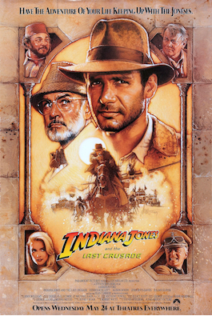

The Last Crusade
In 1938, after his father Professor Henry Jones, Sr. goes missing while pursuing the Holy Grail, Professor Henry 'Indiana' Jones, Jr. finds himself up against Adolf Hitler's Nazis again to stop them from obtaining its powers.

Raiders of the Lost Ark
Archaeology professor Indiana Jones ventures to seize a biblical artefact known as the Ark of the Covenant. While doing so, he puts up a fight against Renee and a troop of Nazis.

Temple of Doom
A skirmish in Shanghai puts archaeologist Indiana Jones, his partner Short Round and singer Willie Scott crossing paths with an Indian village desperate to reclaim a rock stolen by a secret cult beneath the catacombs of an ancient palace.